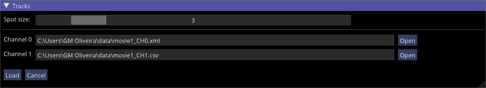
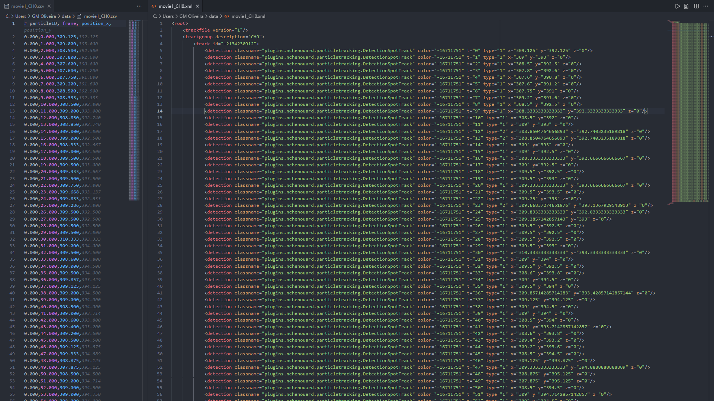
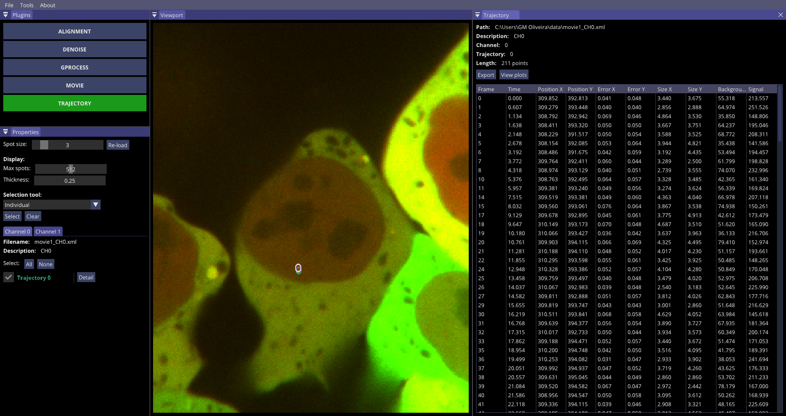
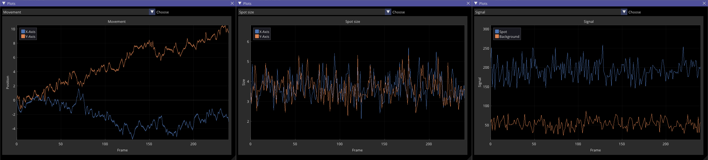

Trajectory plugin
Once the movie was imported, the user is able to load tracked trajectories into GP-Tool. There are 3 possible ways to do so:
- Clicking on File > Load trajectories...
- Selecting Trajectory plugin under plugins tab and the "Load" button
- Key combination "Ctrl + T"

Any of these options will open a dialog where the user will be able to load a track file per channel. At this point, the user should also set an average size expected for spots. This value will be later used to enhance localization and estimate positional errors among other properties for each spot. If, for any reason, the user wants to change this value, there is the possibility to reload trajectories with a different expected size from within the plugin's properties tab.
By default, GP-Tool accepts XML track files from ICY software or "handmade" CSV files. The following image shows how these files should resemble.
By clicking on load, GP-Tool will launch a set of algorithms to characterize each spot and remove possible outliers, such as false positives. Upon completion, the properties panel will open a tab for each channel in which all trajectories should have an unique color code assigned. The same color will be used to circulate corresponding spot in the view port if spot is checked.
The user can check further details about the trajectory described by each spot clicking in the button "detail". This option will open a tab containing information about detected frames, corresponding elapsed times in seconds (if metadata is properly configured), position in X and Y, localization error in X and Y, spot size in X and Y, background and above background signal. All coordinates, errors and sizes are given in pixels. For convenience, this table can be saved in a CSV file by clicking on the "Export" button.
Aiming for a more intuitive analysis, clicking in "View plots" on top of the table, the user will be presented with plots containing information about the spot's position over time with a interval, spot size and signal as follows
For the purpose of selecting only trajectories a specific region of the movie, a ROI utility is provided. By holding the "Ctrl" key and left-clicking on the image, vertices of the ROI are added. By adding multiple points, the user can construct the desired shape. "Ctrl + middle-click" allows the user to move vertices. Lastly, "ctrl + right-click" allows the user to remove vertices.
By clicking on button "Select", all the spots located within the boundaries of the ROI will be selected. Differently, clicking on the button "Clear" will remove all the vertices inserted, hence deleting the roi. As a reminder, only seleted trajectories will be analyzed with the Gaussian process plugin.